【棋评】【暑假杯】白龙出海，惊涛骇浪――外势与内力的较量
第四轮神话3台棋评
作者： xiake
对局链接：http://game.freewzq.com/offlineDisplayGame.html?html=9947381&id=1998
对局总谱：
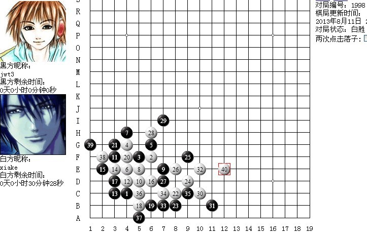
对局结果：讲五堂 jwt3 负 神话 xiake
本轮是比赛的第四轮，对手是讲五堂，由于讲五堂排在第一位，实力很强，所以我们要想胜的话不能强攻，只能智取。经过商讨，最终决定用白棋的一个骗招，这个骗招的灵感， 来自于第二轮对创世纪的比赛。当时我们的二台执黑对创世纪，前9手模仿十番棋，创世纪二台10手变招，我们的二台再长考之后才找出强防，险些输掉，消耗了大量的时间。赛后拆解发现这个10的确不错，虽然黑棋有强防，最终白棋胜不出，但是短时间内能把强防都算出来难度非常大，于是我们决定用这招来对付讲五堂，或许可以骗到一两局。
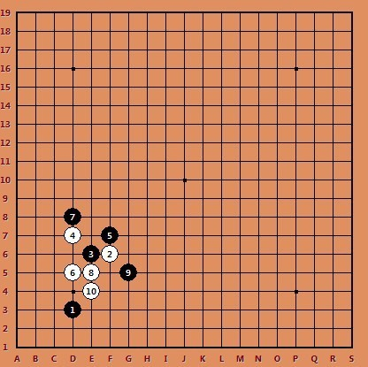
比赛开始以后，4盘棋的第一步全部是D3，对方两个后手的台次全部选择了交换，另外两个我们后手的台次没有选择交换，这样就变成对方全部执黑，我们全部执白了，正好可以运用赛前准备的变化。于是模仿十番棋，正常行至第8手，我们的一、四台也行至第8手，完全一样，2台对方选择了别的变化。这时讲五堂的1台很快给出了十番棋的第9手G5，正好中招，而三四台的第9手还未落，由于担心1台落下10手以后，对方意识到这个局面不好下，于是让1台继续等待，等对方三四台落子之后再行棋。过了一会以后，三四台也落子了，都是选择了G5，这样我们这边就可以开始了。最先是1台落下了E4，紧接着我和4台也落了G4，开始用我们赛前拆解的东西
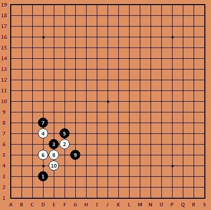
赛前我们对这个局面进行了大致拆解，基本认为11手C5是唯一，挡在C6的话，大概算了一下有必胜，稍微复杂一些。面对3个台次出现了相同的局面，对方终于意识到什么了，这个时候开始长考。长考之后还是一台先落了子，挡在了C5，如果我一台马上就落子的话，对方就会看出我们后续的手段，于是继续让我们的一台等待，等对方三四台落子。将近过了20分钟，三四台几乎同时选择了C6，让我有些惊讶。因为我们基本认为C6已经败了，C5才是强点，于是12手我开始按照开始拆好的白必胜手段行棋。从13手到21手，黑棋都是唯一防，用软件不难算出来。
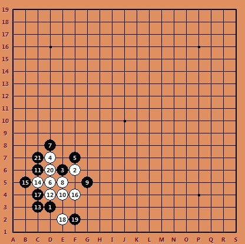
22手的选择比较关键，黑棋成包夹之势，如果白棋不能突围必将输掉。白棋要找到最强的进攻，联系全盘子力。此时，我看到了H3这个好点，首先这个点自带一级连攻胜，黑棋必须跟防，无论黑棋防在哪里白棋均能找到下一步的连接好点
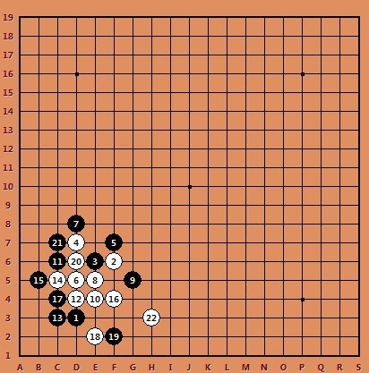
比如 23手防H4，白棋可以在E3、B6、G3、I3连续冲四形成强势进攻，白棋胜定，如下参考图
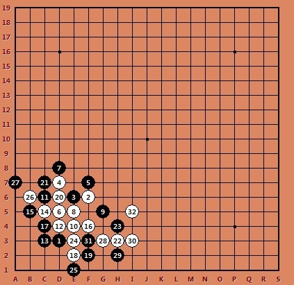
若23挡在G4，白棋仍然可以在E3、B6、G3、I3连续冲四形成强势进攻，如下参考图
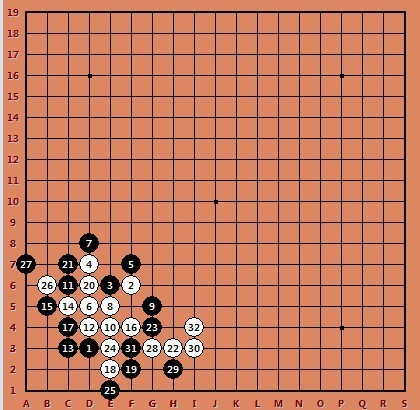
于是22手落在H3，用软件拆的这个点大致上必胜，但没有细拆过，不知道有没有误算。
这手棋以后，对方又开始长考，花了很多时间。最终落在H2,。我用软件算了一下I4就可以必胜了，于是就落子了。形成如下局面
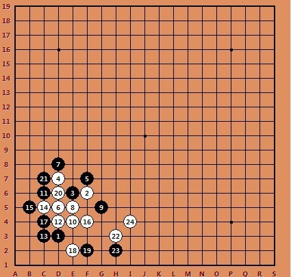
当时觉得已经胜了，对方撑不了几步了。25手对方又长考，现在白棋在右侧形成强势进攻，连接比较多，如果25手单纯在H4挡眠三，则白棋可以上下连接，白棋在F8、G2活三，在I5必胜，如下参考图
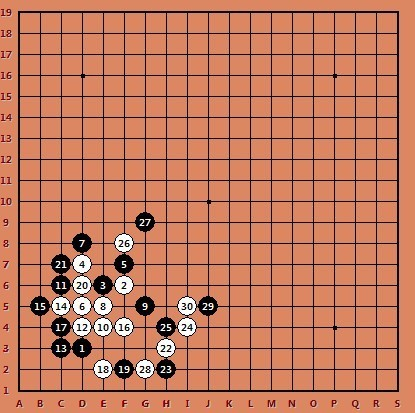
［此帖子已被 蓝天蓝 在 2013-9-18 23:02:48 编辑过］
［ 踵酃 于 2013-9-19 5:03:45 时奖励此帖[金币加 100 威望加1］
［ 与郎共五同学于 2013-9-19 11:43:11 时花20金币送鲜花一朵］
［ 与郎共五同学于 2013-9-19 11:43:11 时花20金币送鲜花一朵］
［ 与郎共五同学于 2013-9-19 11:43:11 时花20金币送鲜花一朵］
若25挡G2，白棋则可以E3、B6冲四，然后再I5做棋连接上下子力成必胜型。本轮4台的棋局正好展示了这个分支，如下参考图
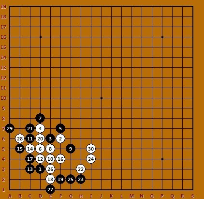
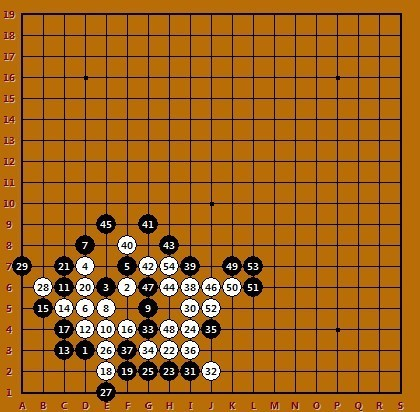
实战的25手最终落在I6，意在隔断白棋上下连接，把下面的白棋压缩在边缘，并且把一条竖线和一条斜线压缩成5线使之不能形成活三，就棋型而看应该是个不错的25手。
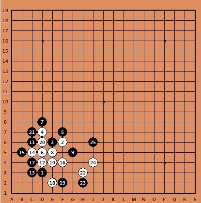
但我用软件算了一下，软件一秒钟就算到了J5必胜。我心里想，怎么会这样？这么简单的胜对方不可能没算到，于是我开始怀疑软件是误算。我就继续往后多算了几步。27手挡G2，28手F8必胜，29挡G9，突然白棋算不出有胜了，算了很久都算不出来。原来真的是软件误算了，只能回到25手重新拆解了，终结者怎么算26都是走J5，让人很郁闷，只能靠自己了。最终花了大量的时间，终于找到了一个很强的26，发现26走H5以后，黑棋怎么防，白棋都能胜，不知道自己拆解的是不是有误，但只找到了这个点，就走这里了。
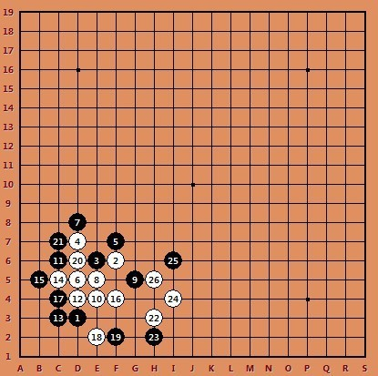
黑棋只有两个防点，G4和H4，防在H4的话，28 J3活三，29挡K2,30 E3冲四，32 B6冲四，34 I3活三，白棋就胜了。 如下参考图
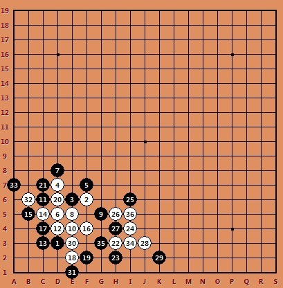
27手挡G4的话，要强一点，对方实战就走在G4，28 F8跳三，29挡G9，30手J3活三，若31黑挡上反三，则白棋反冲四，然后I3活三胜，如下参考图
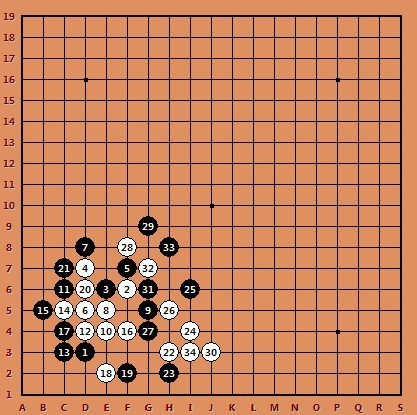
实战31挡下，32手J5活三，33在G2反三，34 G3再反三，35挡I3，36 E3冲四，38 B6冲四，把黑棋的连接都断了，白棋40手L5做棋胜定，对方长考到超时。全局如下
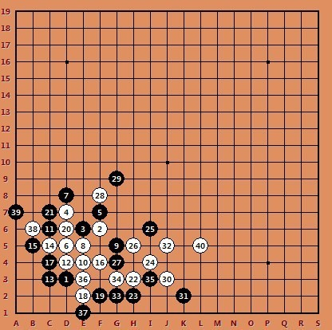
41手的最强支撑应该是G7了，假设对方41走G7的话，白棋K5、K6冲四，然后挡在G8，白棋右边连接众多，而黑棋怎么动，白棋都能反掉。参考图如下
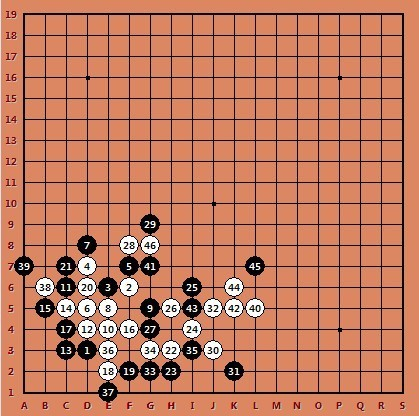
实战31挡下，32手J5活三，33在G2反三，34 G3再反三，35挡I3，36 E3冲四，38 B6冲四，把黑棋的连接都断了，白棋40手L5做棋胜定，对方长考到超时。全局如下
黑最强I7活三，48 E7反四，50手K4双活三，黑棋已无从防守，白棋依然胜定。
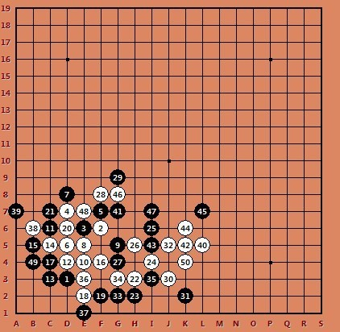
本轮次算是爆冷战胜讲五堂，取胜的原因来自于多方面，如对创世纪一盘棋的灵感、对手集体执黑，还有十番棋做的引导以及我们队员的努力等等，算是运气比较好，捡了一分。
［此帖子已被 蓝天蓝 在 2013-9-18 23:24:25 编辑过］